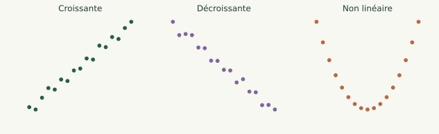

Cours détaillé 01 / 21
Corrélation et Régression linéaire

Approfondir les statistiques
Relier deux variables et ajuster une droite.
Cours détaillé 01 / 21

Cours détaillé 02 / 21
Cours détaillé 03 / 21
import numpy as np
# Temps d'entraînement (heures/semaine)
x = np.array([1, 2, 3, 4, 5, 6, 7])
# Performance (score)
y = np.array([10, 12, 15, 18, 19, 22, 24])
Cours détaillé 04 / 21
import matplotlib.pyplot as plt
plt.scatter(x, y)
plt.xlabel("Temps d'entraînement")
plt.ylabel("Performance")
plt.title("Nuage de points")
plt.show()
Cours détaillé 05 / 21
y à partir de x ?Cours détaillé 06 / 21
La corrélation mesure à quel point deux variables évoluent ensemble.
Cours détaillé 07 / 21
Valeur comprise entre –1 et +1
r = np.corrcoef(x, y)[0, 1]
r
Cours détaillé 08 / 21
| Valeur de r | Interprétation |
|---|---|
| proche de 1 | lien linéaire fort positif |
| proche de –1 | lien linéaire fort négatif |
| proche de 0 | pas de lien linéaire |
Cours détaillé 09 / 21
On donne :
a = np.array([2, 4, 6, 8, 10])
b = np.array([9, 7, 5, 3, 1])
# TODO
Cours détaillé 10 / 21
Exemples classiques :
La corrélation décrit un lien, pas une cause.
Cours détaillé 11 / 21
Cours détaillé 12 / 21
Trouver la meilleure droite qui approxime la relation entre
xety.
Forme :
a : penteb : ordonnée à l’origineCours détaillé 13 / 21
a, b = np.polyfit(x, y, 1)
a, b
Cours détaillé 14 / 21
y_pred = a * x + b
plt.scatter(x, y)
plt.plot(x, y_pred)
plt.show()
Cours détaillé 15 / 21
areprésente la variation moyenne deylorsquexaugmente de 1.
Exemple :
a = 2.1 → +1 heure d’entraînement ≈ +2.1 pointsCours détaillé 16 / 21
x = np.array([0, 1, 2, 3, 4])
y = np.array([1, 3, 4, 7, 9])
a et b# TODO
Cours détaillé 17 / 21
Les résidus mesurent l’erreur du modèle :
residus = y - y_pred
residus
Cours détaillé 18 / 21
plt.scatter(x, residus)
plt.axhline(0)
plt.xlabel("x")
plt.ylabel("Résidu")
plt.show()
Cours détaillé 19 / 21
Cours détaillé 20 / 21
Cours détaillé 21 / 21
r ?Vous avez parcouru ce chapitre.
Covariance, ANOVA et ACP →Les corrections s’ouvrent en cliquant sur « Afficher la correction ».